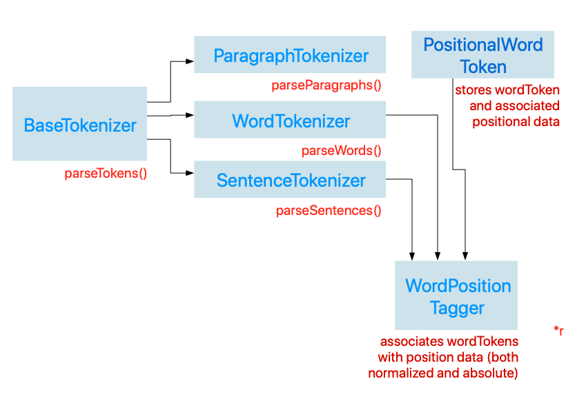
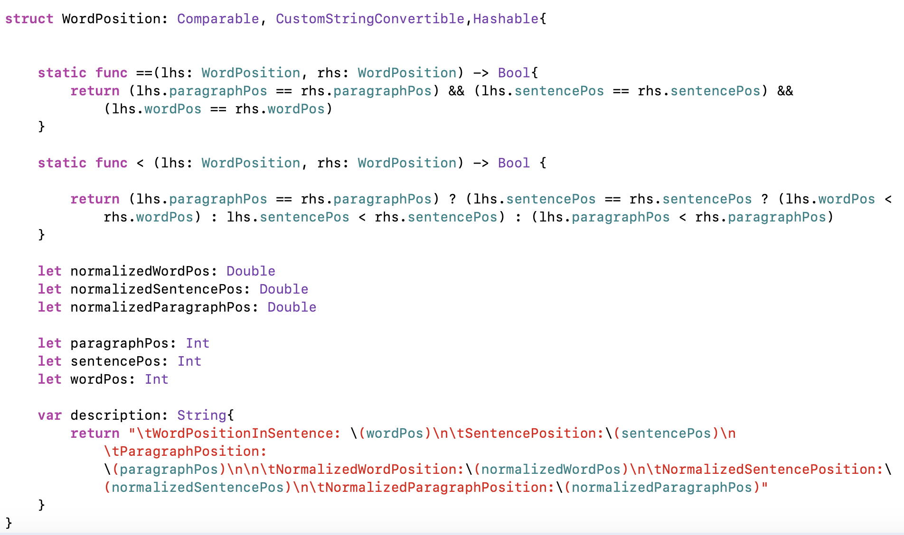
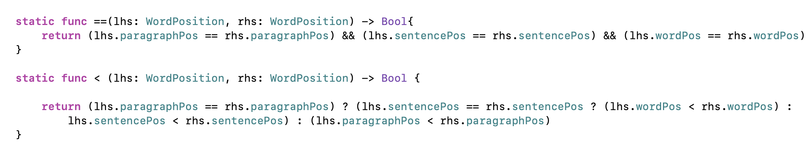
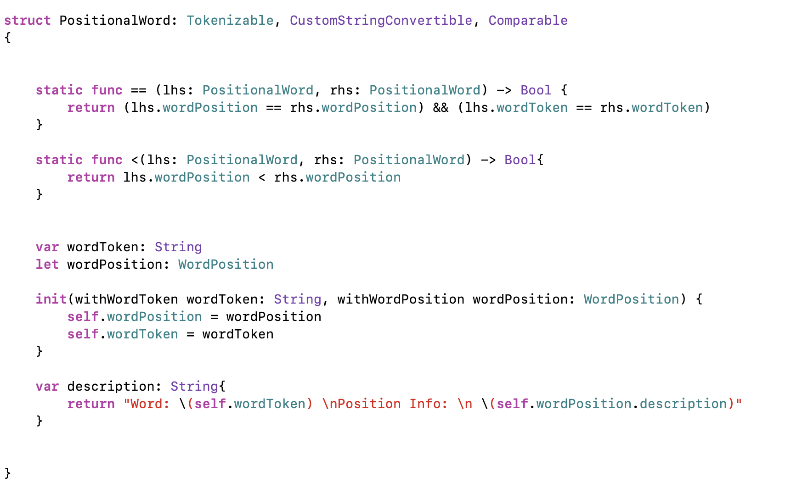
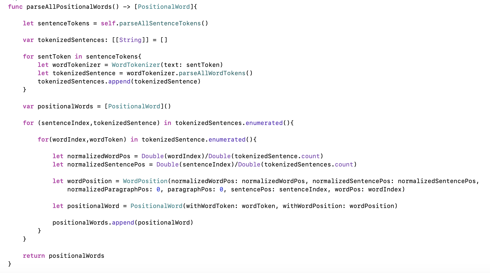
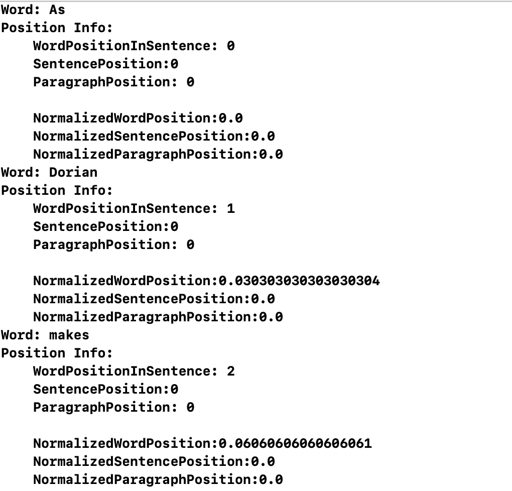
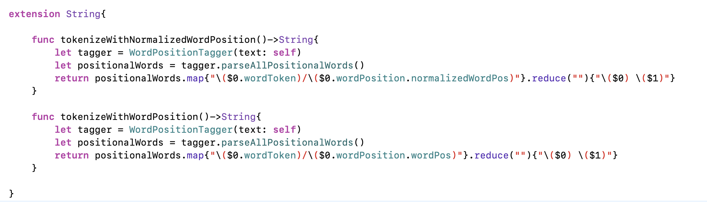
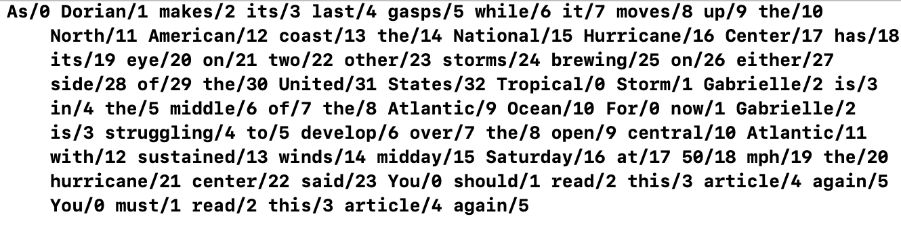

In addition to part of speech tags, it can also be helpful for linguistic analyses to consider word position as a linguistic feature. Word position can further be related to part of speech data. For example, what percentage of sentence-initial words are determiners or personal pronouns? What percentage of sentence-initial words are transitions, such as "in addition," "furthermore," etc. We might also be interested in such questions as the average position or most frequent position of nouns or proper nouns in a given unit of text (such as a document, paragraph, or sentence).
Word position can be designated with simple integer indices. It can also be normalized by diving the integer position index by the word count. It can even be further specified with coordinates that indicate positions within the larger document structure. For example, in a 2D matrix where rows correspond to sentences and where columns represent word tokens within a given sentence, each word could be designated with a coordinate (x,y).
Here is our plan for building upon our previous classes to create a tagger that will tag words with position data:
To that end, let's begin by defining a struct WordPosition that will store word position data (both normalized and absolute data). We'll make this struct conform to the Comparable protocol so that words associated with position data can be ordered accordingly.
In order to make the struct conform to the Comparableprotocol, we overload the '<' and '==" operators as shown below:
Word positions are ordered first with respect to paragraph positions. If paragraph positions are equal, then the structs ordered with respect to sentence positions. If sentence positions are equal, then the structs are ordered relative to other words in the same sentence.
Now let's define another struct PositionalWord that will associate word tokens with positional information. This struct will conform to the Tokenizable protocol defined earlier, which will allow us to use it as an argument for classes that will calculate useful linguistic statistical information.
Now let's define another tokenizer subclass called WordPositionTagger. For now, it will inherit from SentenceTokenizer, because the assumption is that it will be used to tag words with positions within a single paragraph. We can refactor this later on so that it inherits from ParagraphTokenizer if we want to get more detail position data within the larger document.
Here is the output that we get when we call the parseAllPositionalWords method on the following sample text
Here, I only show the output for the first 3 words in the text. This is a little bit dense and wordy. Let's define an extension on the String class, and within this String class extension we'll define some convenience methods that can make our programming style a little more declarative.
Now, let's call these methods on a string that represents the news article that I've linked to above. In the viewDidLoad() method of our Xcode project, let's call the String extension methods that we defined above:
We should get the following ouput:
This output is a little more readable and shows more clearly how word tokens are associated with their respective position data.